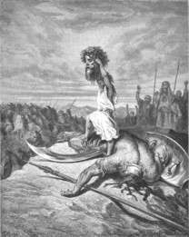

Home Quiz
Shadowland: Beginnings: Week 11
The Sons of God
Who are the "sons of god" in these passages: Genesis 6:1-4; Job 1:6,2:1;
Psalm 89:6? There are two main interpretations of the Sons of God in Genesis
6: the staid Presbyterian interpretation, and the Rosemary's Baby
hypothesis. The early church fathers were divided between
these two views.
The safe interpretation: Mixed Marriages
The "Sons of God" are the godly line of the Seed. It is assumed they
were instructed to not intermarry with the ungodly line of Cain, just as the
Israelites were instructed not to intermarry with the Caananites. When they
disobeyed, the line was in danger of corruption. Our mentor St. Augustine
and letters attributed to St. Clement espoused this view, as did many Jewish
commentators of the Greek era.
"Furthermore, you shall not intermarry with them; you shall not give your
daughters to their sons, nor shall you take their daughters for your sons.
For they will turn your sons away from following Me to serve other gods; then
the anger of the LORD will be kindled against you and He will quickly destroy
you." Deuteronomy 7:3-4
The scary interpretation: Direct Creations of God
Tertullian and Lactantius had a different opinion. Every mention of the "sons
of God" in Scripture, including those above, refers to a being directly created
by God. Adam is called "the son of God" in Luke 3:38 because he is the direct
creation of God. The sons of God sang together in Job 38:7, before Adam was
created.
Jesus is the Son of God because he is the direct "creation" of God when Mary
was over shadowed by the Holy Spirit, as well as being God, and also the Son of
Man, through the lineage of Mary, and also the Heir of David by adoption
through the line of Joseph.
Most wonderfully, "But as many as received Him, to them He gave the
power to become the sons of God, even to them that believe on His name,"
John 1:12. We as Christians are direct creations of God through the
new birth, and therefore sons of God! "Therefore if anyone is in Christ, he is
a new creation. The old has passed away. Behold, the new has come!"
2 Corinthians 5:17
The angels are therefore sons of God, and Jude has this to say:
"And the angels which kept not their first estate, but left their own
habitation, he hath reserved in everlasting chains under darkness unto the
judgment of the great day," Jude 6. Jesus said, "In the resurrection, people
will neither marry nor be given in marriage. Instead, they will be like the
angels in heaven." Note that the angels in heaven do not marry, but he does
not say that there is no potential to do so.
On the Fence
One problem with the safe interpretation is: where do the Nephalim come
from? Some commentators note that "nephalim" could also be "one who makes
others fall" (Hiphil causative) - i.e. a bully. So the godly line married
ungodly wives, and their offspring were bullies. But that doesn't explain the
nephalim the Israelites faced in Caanan. Or Goliath and his kin. Why is it a
problem when a son of God marries a daughter of men, but a daughter of God
marrying a son of men is not worthy of mention?
Note that it is logically possible for both of these orthodox
interpretations to be true.
Other interpretations
Those who believe that "firstborn of creation" means that Jesus was a created
being (e.g. Arians, Mormons) see the sons of God as fellow elder beings -
brothers of Jesus also with human like bodies. The rest is predictable.
The word "Nephalim" means "descended". This plays quite well with
flying saucer,
alien, and reptilian conspiracy enthusiasts.

The Nephalim
- 6:3 "120 years" - i.e. year 1536.
- 6:4 "and also after that" - see Numbers 13:32-33. Secular commentators
note that the 10 witnesses were unreliable, but Joshua and Caleb did not deny
the report of nephalim - they only affirmed that God was able to give them the
victory. Numbers 14:6-9
- 6:12 "all flesh had corrupted itself". More confirmation of the
fallen angel theory.
Noah
- 5:29 Noah means "comfort". Isaiah 11:10, Matthew 11:28
- 6:8 Noah found grace. Matthew 3:17
- 6:9 "Noah was a just man," Luke 23:47
"Perfect in his generations," the sacrificial lamb must be without
blemish. Exodus 12:5
The priest must be without physical defect to offer sacrifices.
Leviticus 21:16-24 Our high priest is undefiled. Hebrews 7:26
"Walked with God" Jesus walked with God throughout his life
on earth. Luke 2:52, 4:4, 6:12, 23:46
- 6:14-19 "Make thee an ark." God gave Noah the work of preserving
a remnant of all flesh. God gave Christ the work of saving mankind. John 17:4
While sunday schools typically show Noah's sons helping, there is no mention
of this, as if Noah did the work alone. The high priest did his work
alone. Leviticus 16:17 Our Saviour did His work alone. 1 Peter 2:24
- 6:18 Noah's work resulted in the "saving of his house". Hebrews 11:7
Christ's work resulted in the saving of his house. Hebrews 3:6
- 6:20 "Of fowls, cattle, creeping things..to keep them alive." Christ's
work will deliver all of creation. Romans 8:21
- 6:21 "food for you and them." Christ
is our shewbread and provider. Leviticus 24:9 John 6:1-14,35
- 6:22 "Thus did Noah according to all God commanded him." Christ gave
perfect obedience to the Father. John 15:10 Phil 2:8